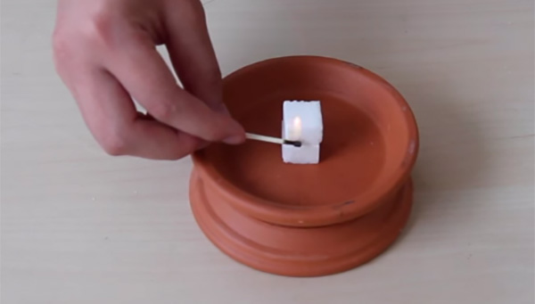
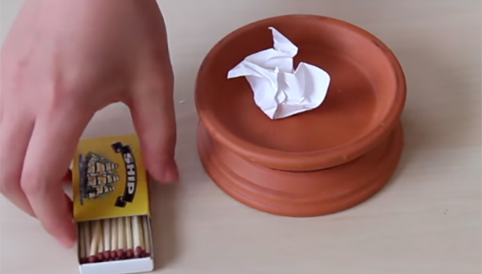
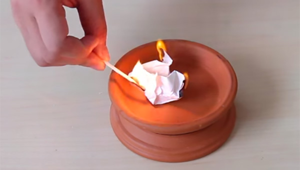
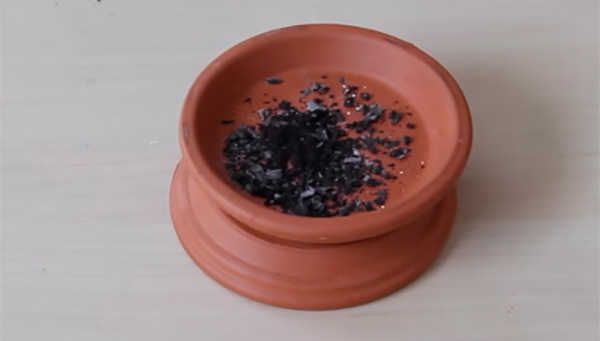
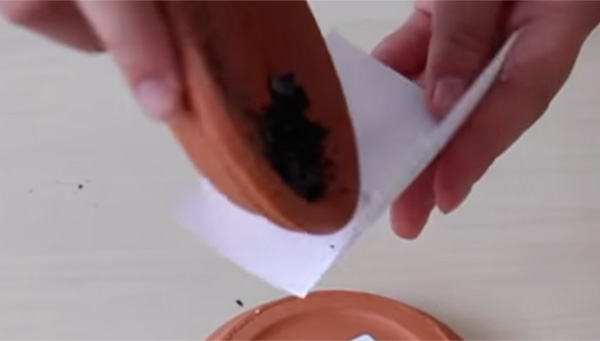
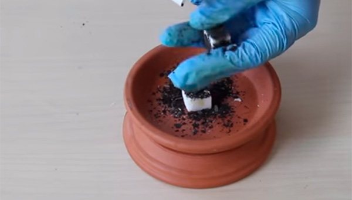
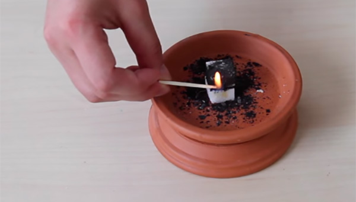

Burning sugar
Usually sugar doesn't burn. Add ashes to set it on fire.
| Difficulty: |
|
| Danger: |
|
| Duration: | 15 min |
С12H22O11 + O2 → CO2 + H2O
Safety
During the experiment have a bowl of water nearby. Put a stand for burning sugar on top of the box, with a convex side up. Do not touch the stand after the experiment. Wait until it gets cold.
Step-by-step instruction
 |
 |
| 1. Put the ceramic plate on the tray upside down. Put the second place on top of the first plate. | 2. Try to light up an ordinary piece of sugar - it will not burn. |
|  |  |
| 3. Crumble a piece of paper, put it on the plate. | 4. Burn the crumpled piece of paper. |
|  |  |
| 5. Wait until the paper is completely burned. | 6. Gather the resulting ashes. |
|  |  |
| 7. Rub the ashes into the sugar cube from all sides. | 8. Ignite this piece of sugar. You may need time to light it up. |

Expected result
An ordinary piece of sugar does not burn. Add ashes and the sugar will light up.
Disposal
Throw reagents in the trash.
Scientific description
Why do some substances burn, while others do not?
Let's first look into the process of burning and what it exactly is. Burning is the reaction of oxidation of a substance by oxygen. Oxygen takes away electrons from a substance, breaks the bonds between atoms, puts itself into molecules and turns a substance into a mixture of oxides. The difference between burning and other oxidation reactions (e.g. iron corrosion) is that during burning a large amount of heat is released. 2 conditions must be carried out for a substance to burn:
- When it is oxidized, a large amount of heat must be released, enough to sustain burning
- The oxidation reaction go quite fast
Why doesn't a piece of sugar burn?
The oxidation of sugar is capable of releasing enough heat. It's easy to remember, if you look at a pack of cookies and its calorie capacity: the amount of calories in food is the heat generated during its oxidation in the body. However, the oxidation of sugar is quite slow, so sugar does not burn.
Why does sugar start to burn when you add ashes?
In the burning of sugar ashes serve as an accelerator (catalyst) of the reaction. A catalyst is a substance that makes reactions, which theoretically should occur, but in practice are too slow, possible in the real world. Imagine that you are on a valley, and you need to go down to the sea, but a mountain range has grown on your way. To go straight through the mountains is one way, it is long and difficult. It is a whole other thing to find a guide who knows the path through a narrow pass and can take you directly to the sea through this narrow hidden pass without tedious and dangerous climbs. That is the role that a catalyst plays - it allows a chemical reaction to find a way to a more favorable state, spending minimal "strength" (energy) on the road. Usually in nature a more favorable state means a state with minimum energy.
What are ashes? What are they made of?
Ashes are substances that cannot continue to burn (be oxidized). This means that ashes may consist of salts or oxides. Ashes contain metal carbonates - salts of carbonic acid (H2CO3). These exact substances act as catalysts (accelerators) of the sugar burning reaction. The best catalysts are lithium salts which are found, for example, in cigarette ashes. However, plain paper ashes, which contain sodium and calcium salts, may also catalyze the combustion of sugar.
What is the result of burning sugar?
If sugar burns through to the end, the result of combustion should turn out to be carbon dioxide CO2. However, in reality, sugar does not fully down down and a black mass of products of incomplete oxidation of sugar - complex organic substances - aldehydes, ketones, carboxylic acids are left after it.
It is interesting
Why does burning sugar smell?
The reason of the "caramel" smell of burning sugar is in a number of substances that have common properties. How does our nose detect the smell of a substance? By the shape of its molecules. To distinguish similar molecules, our nose recognizes them very selectively, just as a key fits a lock - you would not be able to open it with another key. So the "key" that opens the smell of melted caramel, which we feel in the experiment, has two carbon atoms connected with each other and "tails" in the form of oxygen and OH groups (above and top right in the displayed molecule of maltol, which gives the described smell)

Frequently Asked Questions
What if the sugar still doesn't burn?
Try to rub ashes into the sugar cube from all sides Try to place the sugar cube covered in ashes on top of another sugar cube and turn it a bit. So it will be easier to set fire to sugar. Try to use a lighter instead of a match